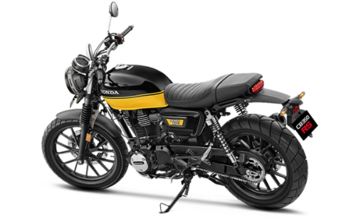

Fetured Bikes 2021
Best bike collection

Happy Clients says

Slate helps you see how many more days you need to work to reach your financial goal for the month and year.
Regina Miles
Banker

Slate helps you see how many more days you need to work to reach your financial goal for the month and year.
Regina Miles
Banker

Slate helps you see how many more days you need to work to reach your financial goal for the month and year.
Regina Miles
Banker
Frequently Asked Questions

History
Making motorcycles with the basic goal of bringing joy and satisfaction to people serves as the starting point of Honda. Honda will continue offering products which fulfill the needs of its customers around the world.
The history of Honda's motorcycle business began in 1949.


Local Models
After World War II, the use of auxiliary engines mounted on bicycles spread quickly in Japan, making it easier for people to move around and transport goods. This was the starting point of manufacturing for Honda. Ever since, Honda has given shape to wide-ranging joys and the fun of riding on two wheels,
Please see the local site through our world-links